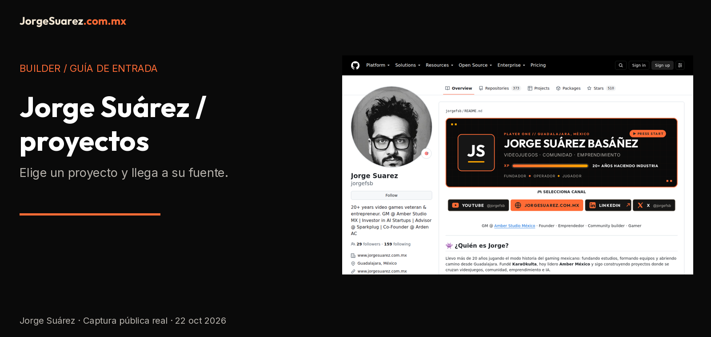
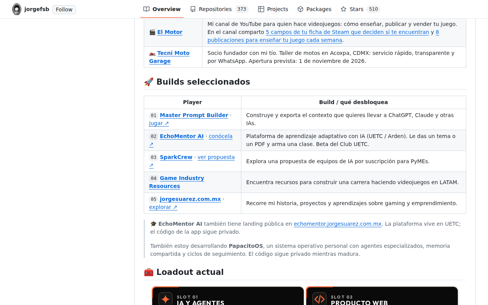

Español | English

Jorge Suárez · proyectos para explorar
Empieza por un proyecto, no por instalar herramientas. Abre Master Prompt Builder para preparar contexto para una IA, o Game Industry Resources para explorar recursos de videojuegos.
¿Qué es?
Este perfil es un índice del builder: reúne proyectos y enlaces de Jorge Suárez. No es una aplicación, un servicio de agentes ni una plataforma con cuenta propia.
¿Para quién?
Para quienes quieren conocer los proyectos, explorar recursos de videojuegos o encontrar el repositorio adecuado antes de pedir ayuda técnica.
¿Por qué existe?
Para dar una entrada clara al trabajo público y distinguir herramientas, propuestas y referencias. El README anterior describe el cruce entre videojuegos, comunidad, emprendimiento e IA; aquí lo convertimos en rutas de entrada, sin inventar resultados.
¿Cómo lo uso?
Elige una ruta y abre su README de main, que es la referencia publicada del proyecto. La nueva documentación de esta familia es una propuesta local: estos enlaces no aseguran que ya esté integrada.
| Quiero… |
Abrir |
Alcance |
| Preparar contexto para una IA |
Master Prompt Builder |
Herramienta de construcción y exportación de contexto. |
| Explorar recursos de videojuegos |
Game Industry Resources |
Directorio de recursos. |
| Conocer el sitio personal |
jorgesuarez.com.mx · sitio |
Historia, proyectos y enlaces públicos. |
| Conocer una propuesta de aprendizaje |
EchoMentor AI · landing |
La landing pública no demuestra la app privada; UETC / Arden conservan su identidad. |
| Explorar una propuesta para PyMEs |
SparkCrew |
Presentación de una propuesta, no prueba de un servicio contratado. |
Empresas y biblioteca: no confundir
Amber, Sparkplug, Arden / UETC y Tecni Moto conservan sus marcas. Esta firma personal no las sustituye ni convierte sus productos en software personal. El perfil anterior las menciona; aquí no se añaden clientes, cargos nuevos, cifras ni promesas comerciales.
Los repositorios marcados Fork en GitHub son referencias de terceros: revisa su repositorio original y licencia. No se presentan como autoría original. Los conteos históricos del perfil anterior no son métricas actuales.
¿Cuándo conviene y cuándo no?
Úsalo para elegir un proyecto y llegar a su fuente. No sirve para contratar automáticamente, administrar cuentas, ejecutar agentes ni verificar la disponibilidad de una app privada.
¿Dónde lo encuentro?
Perfil público · Sitio personal · Brandkit oficial.
Antes de seguir
- Disponibilidad: índice público; captura real del 22 de octubre de 2026. No es una versión instalable.
- Requisitos y ayuda técnica: navegador para leer; las herramientas enlazadas tienen sus propios requisitos. Integrar bibliotecas puede requerir developer o agente.
- Costos y licencia: leer este índice no exige pago; servicios externos pueden cobrar. Este repositorio no declara una licencia abierta para reutilizar todo su contenido. Las marcas no son MIT.
- Privacidad: no hay formulario propio en este README; GitHub y destinos externos tienen sus políticas. No publiques contraseñas ni datos de clientes en issues.
- Límites: enlaces no garantizan que productos o betas estén abiertos. La grabación muestra el perfil publicado anterior, no esta propuesta ya publicada.
- Ayuda: correo público de Jorge; problemas de una herramienta, en su propio repositorio.
Ver antes de decidir

Captura del perfil publicado, no maqueta de una app. Video y subtítulos ES · English captions.
Para quien mantiene la documentación
Guía documental · Aviso de medios. No se requiere clonar para explorar el índice. La evidencia técnica está en reports/docs-brandkit-verification.json.